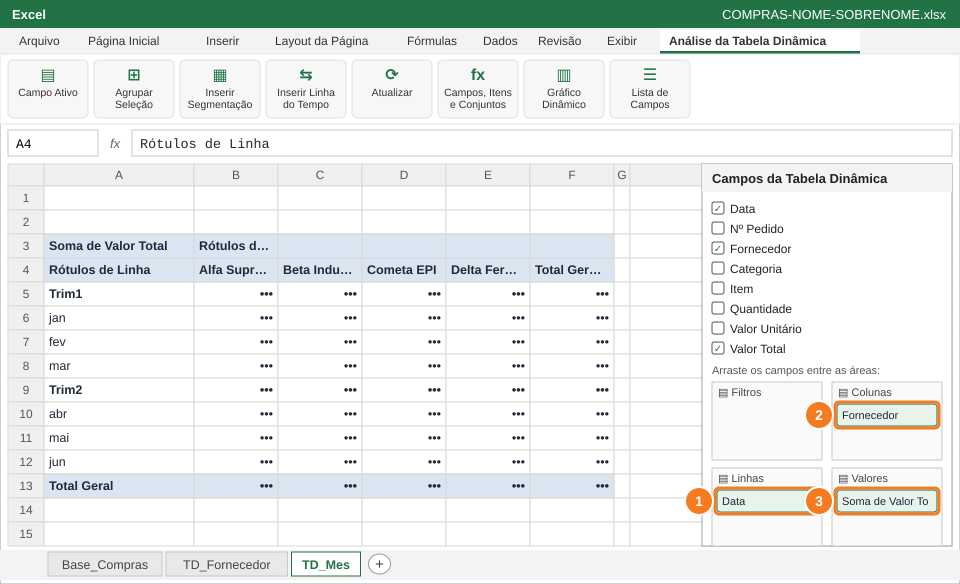
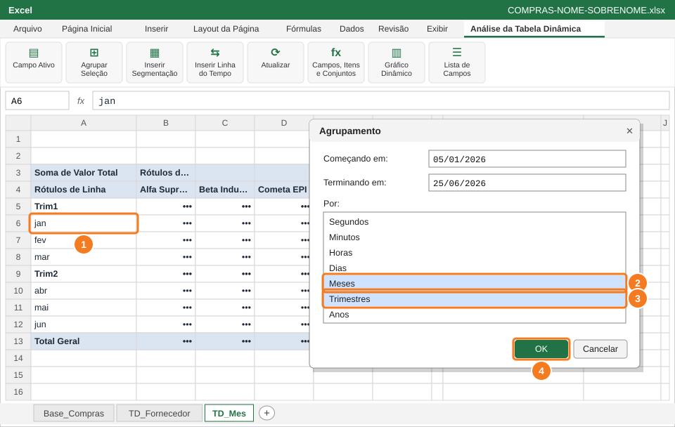
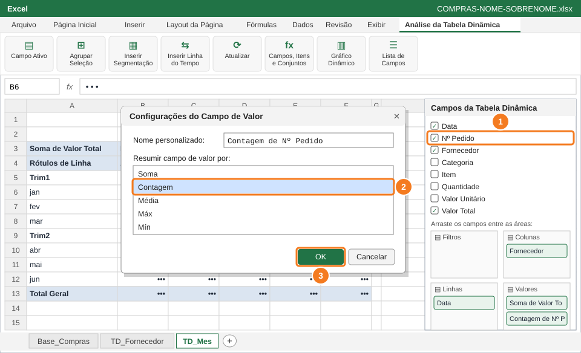
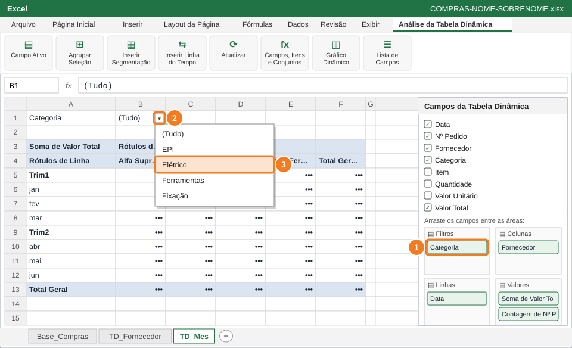
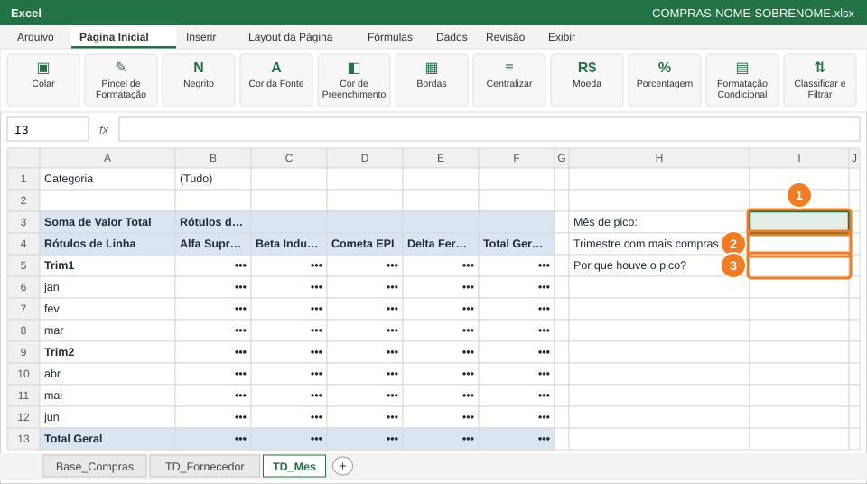

Cruzar mês e fornecedor numa tabela dinâmica, agrupar as datas em meses e trimestres, contar pedidos e usar o filtro para responder: quando as compras se concentram?
Você vai usar
Data em Linhas e Fornecedor em Colunas
Agrupar (Meses e Trimestres)
Resumir Valores Por → Contagem
Área Filtros da tabela dinâmica
Aba de trabalho:TD_Mes (nova) · Slides de apoio: Arquivo 6 — slides 14–16
1
Monte a tabela dinâmica de mês × fornecedor

Data em Linhas (1), Fornecedor em Colunas (2) e Soma de Valor Total em Valores (3).
Volte à Base_Compras, clique na tabela e crie outra Tabela Dinâmica em Nova Planilha. Renomeie a aba para TD_Mes.
Arraste Data para Linhas (1) e Fornecedor para Colunas (2).
Arraste Valor Total para Valores (3) e formate como Moeda (como na Questão 2).
💡 DicaO Excel costuma agrupar as datas sozinho em meses. Se aparecerem datas soltas (05/01/2026, 09/01/2026...), o próximo passo resolve.
2
Agrupe as datas por meses e trimestres

Botão direito numa data ou mês (1) → Agrupar → marque Meses (2) e Trimestres (3) → OK (4).
Clique com o botão direito numa data ou num mês da coluna A (1) → Agrupar.
Na lista Por, deixe selecionados Meses (2) e Trimestres (3). Para marcar mais de um, clique com Ctrl.
Clique em OK (4). Aparecem Trim1 e Trim2, cada um com os seus meses.
⚠️ AtençãoO agrupamento não muda as datas da base: só a forma como a tabela dinâmica as mostra.
🐧 No LibreOffice CalcBotão direito na data → Agrupar e esquematizar → Agrupar, marque Meses e Trimestres.
3
Conte quantos pedidos foram feitos

Nº Pedido em Valores (1) → Resumir por Contagem (2) → OK (3).
Arraste Nº Pedido (1) para a área Valores.
Como Nº Pedido é texto (P-001...), o Excel já usa Contagem. Se aparecer outra operação, clique com o botão direito → Resumir Valores Por → Contagem (2) → OK (3).
Agora cada mês mostra o valor comprado e a quantidade de pedidos.
💡 DicaSoma responde "quanto gastou?"; Contagem responde "quantas vezes comprou?".
4
Use o filtro da tabela dinâmica

Categoria na área Filtros (1), setinha do filtro (2) e escolha Elétrico (3).
Arraste Categoria para a área Filtros (1): o filtro aparece em cima da tabela, na célula B1.
Clique na setinha do filtro (2), escolha Elétrico (3) → OK e veja só as compras de material elétrico.
Volte o filtro para (Tudo) antes de seguir.
⚠️ AtençãoNão esqueça de voltar para (Tudo): com o filtro ligado, as respostas do próximo passo sairiam erradas.
5
Responda: quando as compras se concentram?

Mês de pico (1), trimestre com mais compras (2) e uma explicação para o pico (3).
Olhe a coluna Total Geral (valor comprado) de cada mês e de cada trimestre.
Em H3 digite Mês de pico: e, em I3, o mês com o maior valor comprado (1).
Em H4 digite Trimestre com mais compras: e, em I4, o trimestre (2).
Em H5 digite Por que houve o pico? e, em I5, uma explicação possível olhando a base (fornecedor e itens daquele mês) (3). Salve.
💡 DicaPara achar o motivo do pico, dê duplo clique no valor do mês: o Excel abre uma planilha nova só com as compras daquele mês.
✅ VerifiqueO mês de I3 pertence ao trimestre de I4.
📋 Como esta questão será avaliada
Critério
Pontos
Datas agrupadas por meses e trimestres, com Fornecedor em Colunas